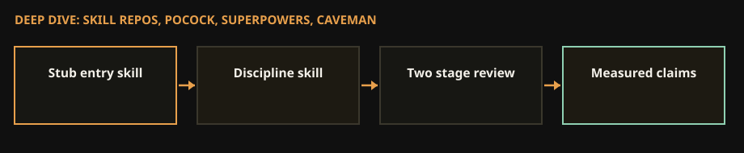

Deep Dive: Skill Repos, Pocock, Superpowers, Caveman
The actual file systems of three public repos, from READMEs read in full and file level analyses. Confidence: Medium High for Pocock skill internals, which rest on the README plus two file level secondary analyses, High for the rest.

Pocock skills: the system shape
27 skills in version 1.3. Two classes. User invoked skills orchestrate: 16 of them, called by a human on purpose. Model invoked skills hold discipline: 11 of them, called by the agent or by a user invoked skill. Law of the system: a user invoked skill may call model invoked skills, and never a second user invoked skill. Folders: engineering with 20 skills and productivity with 7 ship in the plugin; misc, in progress, and deprecated stay out.
The grill pair: a stub and a procedure
skills/productivity/grill-me/SKILL.md (7 lines, full shape): frontmatter: name grill-me, a one line description that calls it a relentless interview to sharpen a plan or design, and disable-model-invocation: true. Body, one line in effect: call the grilling skill. skills/productivity/grilling/SKILL.md (near 30 lines): Treat the plan as a decision tree. Ask in numbered rounds. Put a recommended answer under each question. Write nothing until the user confirms.
The design lesson is the split: the name a human types stays tiny, and the procedure lives in one discipline skill that many entry points can share. grill-with-docs adds one act per talk: shared terms land in a CONTEXT.md glossary, and decisions land as records in docs/adr/, so the talk compounds into repo state.
Named skills, one line each
- tdd: red, green, refactor, one vertical slice at a time.
- diagnosing-bugs: build a feedback loop that goes red on the bug, minimise, hypothesise, instrument, fix, regression test. Each phase gates the next.
- to-spec: turn the current talk into a spec on the issue tracker. No interview in this skill.
- to-tickets and implement: implementation drives tdd at seams agreed in advance and closes with a code review before the commit.
- code-review: two axes, Standards and Spec, run as parallel sub agents.
- triage: move issues through a state machine of triage roles.
- Setup: one setup skill per repo asks three facts: the issue tracker, the triage labels, and the docs location.
- Install forms: the official plugin market, or the skills CLI with a version pin.
One correction to round 1 of this guide: no handoff skill exists in the repo. The word names a pattern inside the grill pair, stub to procedure, not a skill. The profiles page of this site stands corrected by this page.
Superpowers: the mandatory loop
- Brainstorming first, with design shown in chunks for sign off.
- Worktree setup: an isolated workspace and a clean test baseline.
- Writing plans: tasks of 2 to 5 minutes, exact file paths, complete code in the plan, and a verification step per task. The plan reads for a junior engineer with no project context, by design.
- Execution in one of two forms: a fresh sub agent per task with review after each task, or inline execution in one context with one final review.
- TDD inside execution: red, green, refactor. Code written before its test gets deleted.
- Code review between tasks. Critical findings block the next task.
- Branch finish: verify tests, then merge, PR, keep, or discard, and clean the worktree.
- Sub agent development carries a two stage review: spec compliance first, code quality second.
- Failure path: a diagnosis skill reads the session transcript and reports with line level evidence.
Caveman: measured, with the vendor label on
The repo now holds a six part system: voice rules, input compression for logs and test output, an auto model and effort picker, a code mode that keeps and reruns agent scripts, waste fixes, and browse control. Voice rules: answer first in the form thing, action, reason, next step; one idea per sentence; meaning words stay exact (not, never, numbers, units); payload stays verbatim. Levels run from the base mode to two stronger forms. All savings figures in the README come from the vendor own runs and tests. Treat them as claims to test on your own work, never as facts. One figure worth a personal test: input compression cut input tokens by a third across six synthetic large output tasks, with all answers right.
Apply this to your work
Your skill use maps to the Pocock split at once. Your standing orders act as user invoked skills: a named entry, a short body, and calls into discipline procedures such as STE lint, watermark clean, and visual audit. The grill pair gives you the shape for your own plan gate: a grill command that asks numbered rounds with a recommended answer per question, and writes nothing until you confirm. That one skill, run before each multi day build, kills the mid build scope restate cycle you flagged on the exam builds.
Replication checklist
- Split one of your repeat procedures into a stub entry plus a discipline skill, Pocock form.
- Write your grill command this week. Use it before the next multi day build.
- Adopt the two stage review for agent built work: spec compliance, then quality.
- Test caveman input compression on one log heavy task. Measure on your own bill.
Prompt file: prompts/grill-session.md.
Visual map of this page
Two views of one page: a Mermaid flow for work order, rendered by the local Mermaid library in this folder, and a markmap for concept groups.
Mermaid source, for offline read
flowchart LR A[User invokes stub] --> B[Discipline skill runs] B --> C[Work at agreed seams] C --> D[Review: spec fit] D --> E[Review: quality] E --> F[Commit]
How to read the flow diagram. Step 1: start at the first box. Step 2: follow each arrow to the next stage. Step 3: at a branch box, read both paths before a choice. Step 4: a loop arrow means work returns for one more pass vs a test.
Markmap: concepts on this page
- Deep Dive: Skill Repos, Pocock, Superpowers, Caveman
- Pocock
- 27 skills, two classes
- Grill pair
- Diagnosing loop
- Superpowers
- Mandatory loop
- 2 to 5 minute tasks
- TDD deletes early code
- Caveman
- Voice rules
- Input compression
- Vendor figures, test self
- Pocock